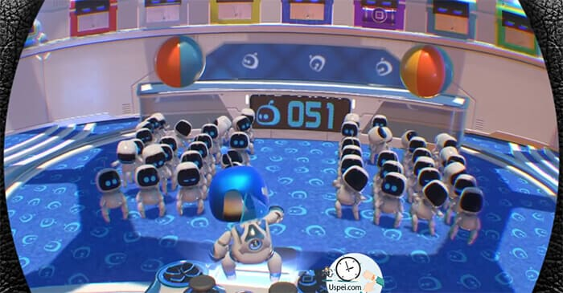
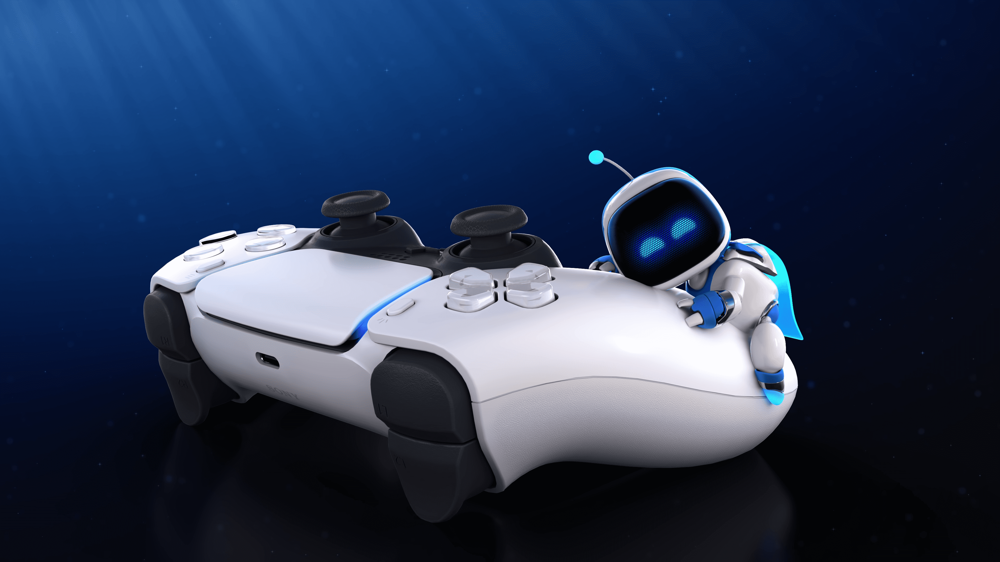

ASTRO BOT
Explore exciting worlds, fight hordes, uncover countless secrets, rescue robots, and face huge bosses. Look and bend in all directions to spot danger in time, observe everything around Astro in panoramic format and receive realistic SOS signals from the 3D sound command.
Features
Gameplay

• Run, jump and fight on rooftops, beaches and even in the belly of a whale.
• Use your entire body to interact with the environment and find secret paths.
• Turn your controller into a multifunctional gadget.
• Find hidden space chameleons to unlock additional challenges.
Bosses
Where Astro Bot Rescue Mission has surpassed Super Mario Oddysey is in bosses. There are only six of them, including the final one, but all are unique and effective. Each has three phases, as we are used to from childhood. However, there is no story behind the bosses, so you don't really empathize with them. And there is no plot in the game as such, so it feels like pure fun, a riot of game mechanics and an emotional feast. So God be with them, with teeth and eyes, the main thing is that it should be fun
More about game
Feel the world around
Every step, every jump, every victory over the enemy will be felt on a completely different level thanks to the new advanced vibration technology
Explore
Find hidden references to the history of PlayStation consoles and collect artifacts in the PС Lab Gallery
For all ages
A magical world, cute characters and a lot of humor - this is a great game to have fun with the whole family.
Check some great screenshots


Rates users
Kristopher Calvin
Astro Bot Rescue Mission is not only the best PSVR title to date, but also arguably the best platformer of this generation so far.
Deana Cindy
This is the best game I played for years. Its just so damn fun. Ended up playing this more then red dead redemption 2 now under the holidays. You feel like a kid playing mario 64 for the first time again.
Korey Ebony
I actually did not believed that this game is such a masterpiece. It is undoubtedly the Best VR game so far and one of the best platformers in history in general.